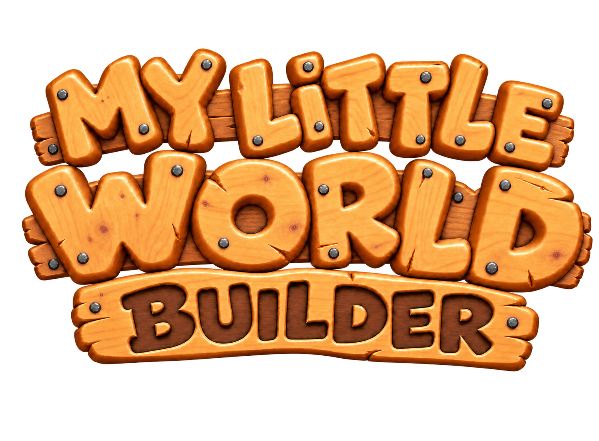

Add model links in Asset Manager to open them here.

Create your own miniature world with roads, landscapes, houses and figures. Arrange and combine pieces, save your layouts, and use the print list to plan the parts you need.
MOUSE
ClickSelect an object
Click + DragMove selection; drag empty space to pan
Right ClickRotate object / group 90°; brief highlight
Middle DragPan the view, including over objects
Mouse WheelZoom in / out
Shift + ClickAdd/remove objects from the selection
Right Drag EmptyBox-select multiple objects
TOUCH
TapSelect an object or place the current dock asset
1 Finger DragMove selection; drag empty space to pan
2 FingersPan and pinch to zoom
Long PressRotate object / group 90°; brief highlight
Bottom EdgeTap the bottom edge to bring up the tile dock
Switch off to keep the asset dock visible.
KEYBOARD
Ctrl + C / Ctrl + VCopy and paste the current selection
Ctrl + Z / BackspaceUndo the last edit
DeleteDelete selected objects
EscCancel placement or stop repeat copy
DOCK & TOOLS
Drag & DropDrag a model from the dock into the world to place it
Dock AssetTap once, then tap the world to place and deselect
✓ Multi-SelectSelect several objects together
Group / UngroupGroup selected parts with a hot-pink outline; color circle recolors COLOR_ parts
📌 PinFix / unlock the selected object
📋 CopyPlace one copy and keep it selected
🔁 Repeat CopyClick to copy, or hold and drag a straight row; Esc / Stop ends it
🗑️ BinDelete selected objects
← BackReturn to the previous asset category
BulldozerClick or hold and drag to delete; pinned objects stay protected; Esc ends it
CenterReturn to the default centered view
🖨️ PrintOpen the required print parts list
🌦️ WeatherAdjust clouds, live weather, clock and lighting